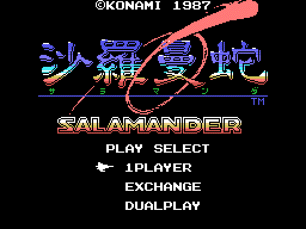

Las fases
Siete fases. La 1 y la 2 van siempre primero; la 3, la 4 y la 5, en el orden que elija el jugador; luego la 6. La 7 solo existe con Nemesis 2 en la otra ranura.
Los recorridos están dibujados desde los bytes de la ROM. El radar y el rótulo están rehechos con los bytes de la ROM e iguales, píxel a píxel, a la VRAM de openMSX; el despegue es la VRAM de cada cuadro de una partida en openMSX, pintada como la pinta el TMS9918 (tools/anima.py).
Las fases y su orden

El radar con los tres planetas.
Tras la fase 2, el juego enseña el radar con EIONEUS, LAVINIA y KIERKE, y el jugador elige cuál hace antes: son las fases 3, 4 y 5, en el orden que él quiera (p10:988A). Hay un reloj: si llega a cero, el juego elige solo (p10:9A43). Detrás viene la 6. La 7, con Nemesis 2, va antes que la 6 (p10:8B7B).
Antes de cada fase sale el despegue desde la base y un rótulo (p10:8A20):

El despegue y el rótulo de la fase 1, 6 segundos. Fijos, iguales a la VRAM: el despegue y el rótulo.


| Fase | Rótulo | Subtítulo |
|---|---|---|
| 1 | OPERATION ONE | -TOP FLIGHT SPEED TO LATIS- |
| 2 | OPERATION TWO | -CONDUCT TO SPACE STATION ZOT- |
| 3, 4, 5 | OPERATION THREE | -SET THE CRUSH BLOW SYSTEM- y el planeta |
| 6 | OPERATION FOUR | -CRUSH SALAMANDER- |
| 7 | OPERATION X | -WRATH OF VENOM- |
En la versión japonesa el subtítulo de las fases 3, 4 y 5 es -SET THE LEEK SYSTEM- (p15:BF5A); los demás son iguales.
Los recorridos

La fase 1 entera, como el juego la va metiendo en la pantalla: baja dos veces por otro mapa.
La 2, la 3 y la 6 van en vertical; las demás, en horizontal (p02:8921). El mapa de cada fase son bloques de 4 x 4 caracteres (p13:6F4C), pero el recorrido no es una tira recta: en tres fases el scroll se para y la pantalla se mueve por otro mapa (p00:4BE6):
- en la 1, al llegar al scroll 0x11F la vista baja 24 filas por el mapa de
p14:80FC, sigue en horizontal y en 0x1FF vuelve a bajar otras 24; - en la 4, en 0x1BF baja 24 filas por
p14:815C; - en la 6, que va hacia arriba, en 0x14F se va 32 columnas a la izquierda y en 0x167 vuelve a la derecha, por
p14:818C.
| Fase | 1 | 2 | 3 | 4 | 5 | 6 | 7 |
|---|---|---|---|---|---|---|---|
| Sentido | horizontal | vertical | vertical | horizontal | horizontal | vertical | horizontal |


Cada enlace lleva al recorrido entero de su fase.
En la fase 4, entre los scrolls 0x100 y 0x150, la base casi no se ve: solo uno de cada 64 cuadros vuelca el mapa con su decorado (p00:5FC5, p01:6016). En las fases 1, 3, 6 y 7 los caracteres cambian a mitad de camino (p00:5C77), y en las 4, 5 y 6 algunos se animan solos (p12:A4A9).